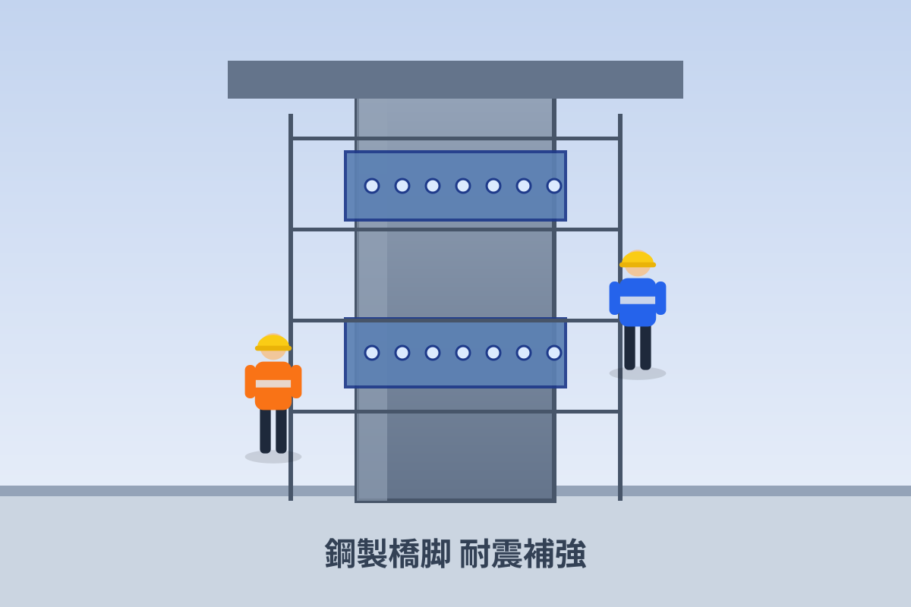

工事C 鋼製橋脚 耐震補強
Construction Project C

補強板の増設と耐震補強の施工状況
工事概要
| 工事名 | 鋼製基礎大規模更新工事（部材補強） |
|---|---|
| 管理者 | 阪神高速道路（例） |
| 工種 | 部材補強・耐震補強 |
| 溶接姿勢 | 全姿勢 |
| 使用本数 | 約 2,548 本 |
| 軸力区分 | 標準軸力 |
| 施工年度 | 2023年度 |
鋼製橋脚および鋼製基礎部に補強板を増設し、母材と補強板を一体化させる定着部材として高強度スタッドボルトを用いた耐震補強の事例です。
上向き・横向き・下向きが混在する全姿勢条件下で多数のスタッドを溶接。各姿勢で安定した溶接品質を確保しています。
孔あけを伴わない接合により、母材断面の欠損を生じさせず、構造性能を損なわずに補強できる点が評価されました。